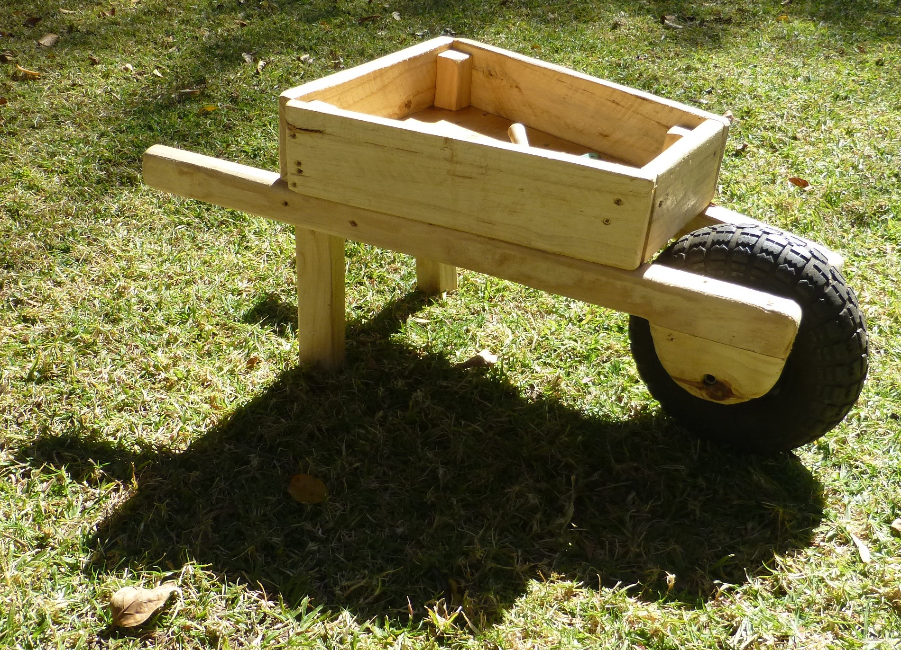
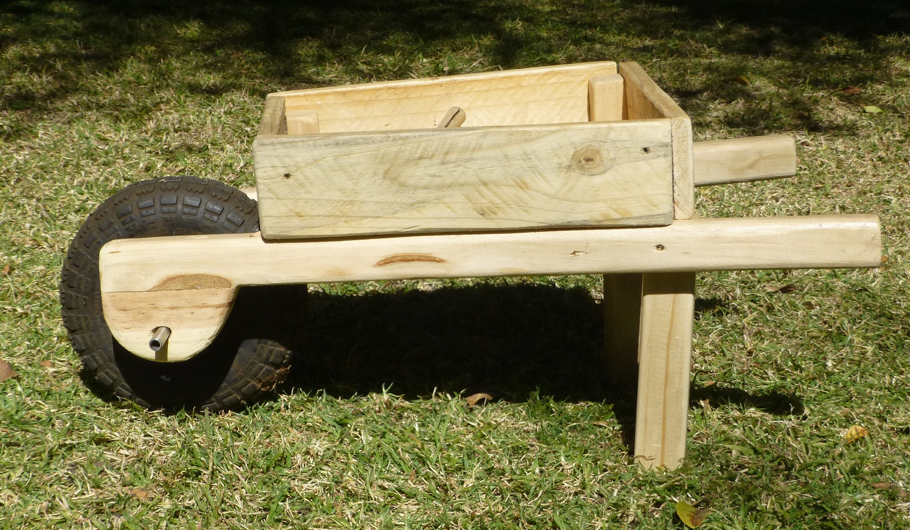
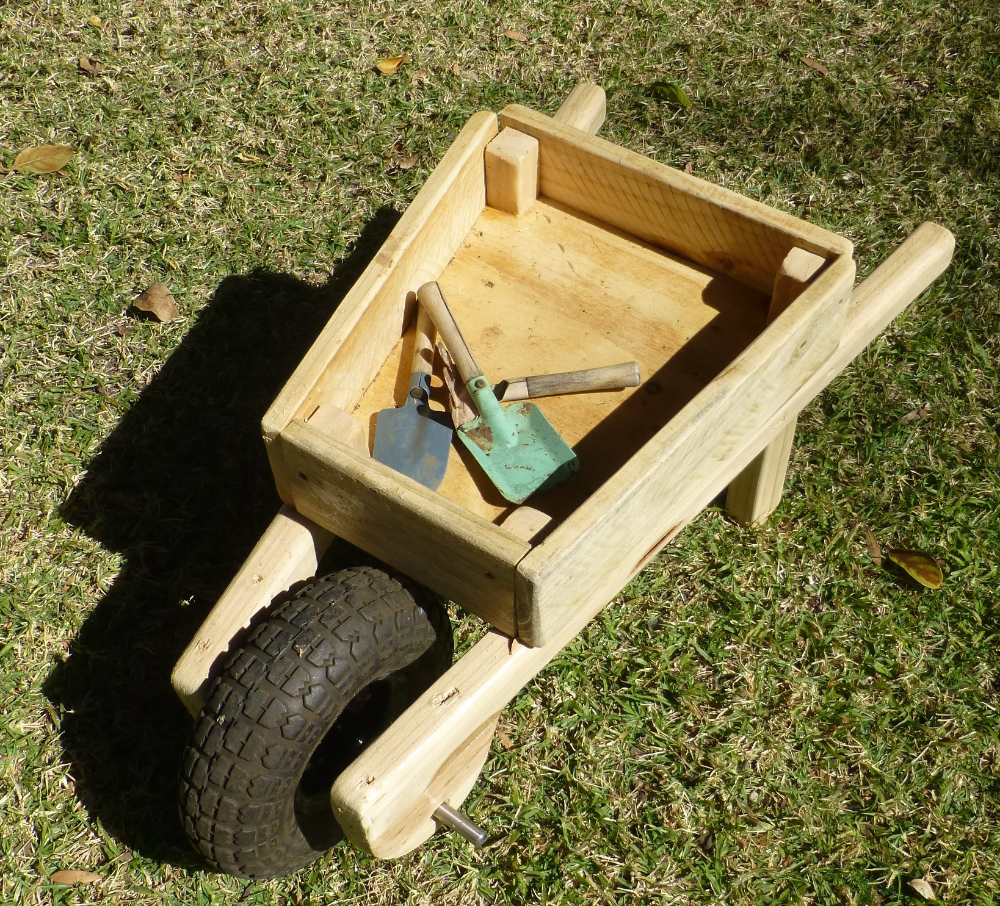

Wheelbarrow
A client came to me with an order for a wheelbarrow for all his gardening needs, and a tight deadline. Fortunately I had a wheel I bought years ago (hoarding pays off), and was able to utilize the client's naptime to get the prototype done.
It initially took some work to convince the client that wheelbarrows only have 1 wheel, and not 3. Once that was settled, we pushed it around and tweaked a few things - the placement of the wheel, the feet, and the bucket, so it sat well and could carry a few tools and a toddler. Once the client approved, I sanded it down and sprayed on Grip Seal Resilience to seal and protect the wood.


